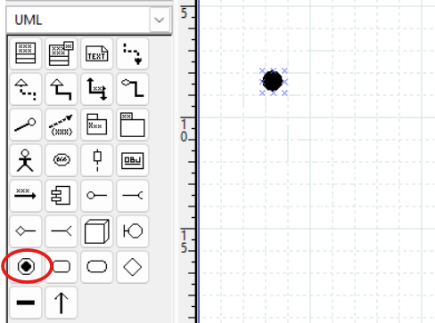
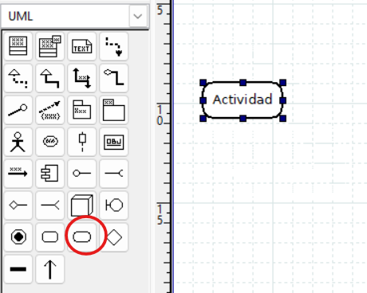
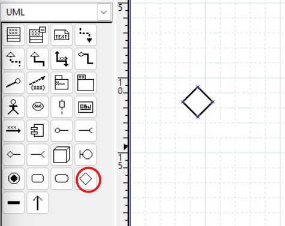
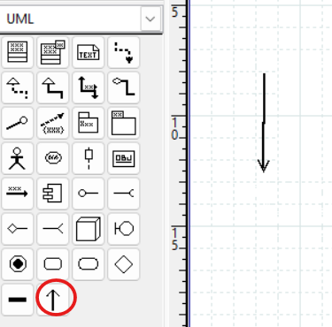
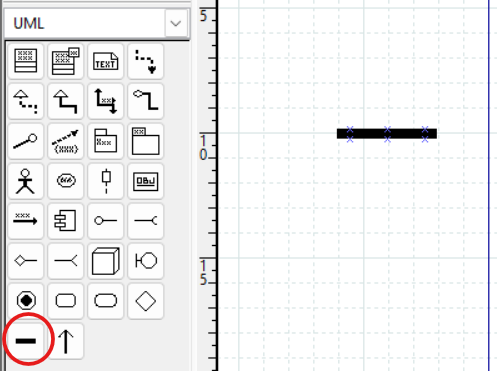
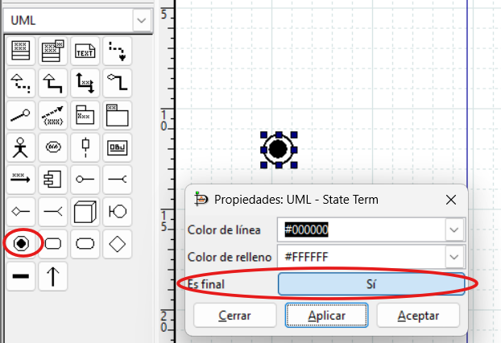
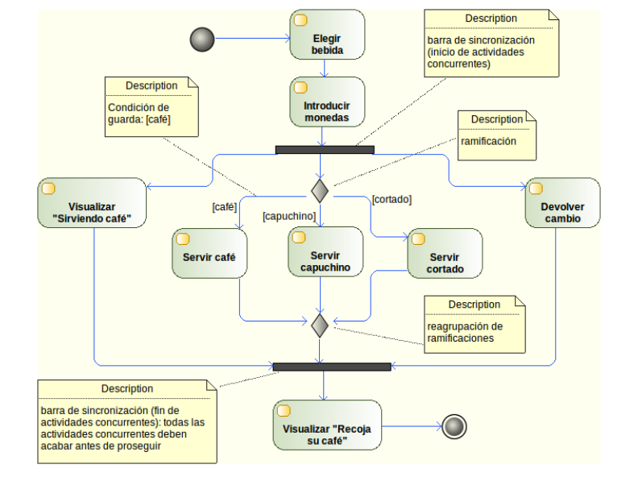

4. Diagrama de actividades¶
Descarga de diapositivas
¿Para qué sirve?¶
Idea clave
Es el diagrama de flujo de toda la vida, con uniforme UML: un proceso de principio a fin, con sus decisiones, sus bucles y sus tareas en paralelo.
Un diagrama de actividad describe el flujo de un proceso o algoritmo paso a paso. Si ya has hecho diagramas de flujo en Programación, este te resultará familiar: cambia la notación, no la idea.
Se usa principalmente para modelar:
- Procesos de negocio: el flujo de una compra, una reserva, una tramitación
- Lógica de algoritmos: los pasos de un método complejo
- Flujos de casos de uso: cómo se desarrolla un caso de uso en detalle
- Comportamiento de métodos: cuando la lógica es difícil de entender solo con el código
Uno pequeño para empezar — sacar dinero de un cajero — con decisión, bucle y dos finales distintos:
flowchart TD
inicio((" ")) --> a(Introducir PIN)
a --> d{"¿PIN correcto?"}
d -- "[no, quedan intentos]" --> a
d -- "[no, 3 fallos]" --> r(Retener tarjeta) --> fin1(((" ")))
d -- "[sí]" --> b(Elegir importe) --> c(Entregar dinero) --> fin2(((" ")))Fíjate en que las condiciones van entre corchetes en las flechas de salida del rombo, y en que un camino puede volver atrás (el bucle del PIN) o terminar en un final propio. Ahora sí, pieza a pieza.
Elementos del diagrama¶
Inicio¶
Círculo negro sólido. Indica el comienzo del flujo. Solo puede haber uno.
En DIA — icono de inicio

Actividad¶
Rectángulo con esquinas redondeadas. Representa una tarea o acción concreta. El nombre suele ser un verbo en infinitivo: "Verificar stock", "Enviar notificación".
En DIA — icono de actividad

Decisión¶
Rombo. Indica un punto de bifurcación donde el flujo toma un camino u otro según una condición. Cada condición se escribe entre corchetes en su flecha de salida —[sí], [no], [stock > 0]— y se llama condición de guarda: "guarda" el camino y solo deja pasar el flujo si es verdadera. Volverás a ver este término en el diagrama de estados.
En DIA — icono de decisión

Flujo¶
Flechas que conectan los elementos e indican la dirección del proceso.
En DIA — icono de transición

Concurrencia¶
Barras horizontales gruesas. Indican el inicio o final de procesos paralelos. Cuando el flujo pasa por una barra de inicio, se divide en varias ramas que se ejecutan a la vez; cuando llega a la barra de fin, se espera a que todas las ramas terminen para continuar.
En DIA — barra de sincronización

Fin¶
Círculo con borde grueso (círculo dentro de otro). Indica la finalización del flujo. Puede haber varios nodos de fin en un mismo diagrama.
En DIA — nodo final
El nodo de fin se crea con el mismo icono que el de inicio. Para convertirlo en final, haz doble clic sobre él → campo "Es final" → Sí.

Para saber más — no entra en examen ni actividades
Particiones (swimlanes)
Cuando intervienen varios responsables, se divide el diagrama en particiones con líneas verticales u horizontales. Cada partición corresponde a un actor (cliente, almacén, contabilidad…). Cada actividad se coloca en la calle del responsable que la ejecuta.
Objetos en el diagrama
Se pueden representar datos que pasan de una actividad a otra como objetos (rectángulos sin redondear). Flecha actividad → objeto: la actividad produce ese dato. Flecha objeto → actividad: la actividad lo consume.
Resumen visual¶
| Elemento | Forma |
|---|---|
| Inicio | ● (círculo negro) |
| Actividad | Rectángulo redondeado |
| Decisión | ◇ (rombo) |
| Flujo | → (flecha) |
| Concurrencia | ═══ (barra gruesa horizontal) |
| Fin | ⊙ (círculo con borde) |
Ejemplo leído paso a paso: máquina de café¶
Este diagrama reúne todos los elementos del apartado. Antes de mirar la explicación, intenta seguirlo tú con el dedo desde el círculo negro:

Lectura del flujo:
- Tras el inicio, el usuario elige bebida e introduce monedas: dos actividades en secuencia normal.
- La primera barra de sincronización abre tres ramas que ocurren a la vez: se visualiza el mensaje "Sirviendo café", se prepara la bebida y se devuelve el cambio.
- La rama central pasa por una ramificación (rombo) con tres condiciones de guarda:
[café],[capuchino]o[cortado]deciden cuál de las tres actividades de servir se ejecuta. Solo una de ellas, porque las guardas son excluyentes. - Un segundo rombo reagrupa los tres caminos en uno.
- La segunda barra de sincronización es el join: espera a que las tres ramas paralelas (mensaje, bebida y cambio) hayan terminado. Solo entonces se muestra "Recoja su café" y el flujo llega al nodo final.
Recuerda
Rombo y barra se parecen pero no se mezclan: el rombo elige un camino entre varios (con guardas); la barra los ejecuta todos a la vez (sin guardas). Si te descubres poniendo condiciones en una barra de sincronización, en realidad querías un rombo.